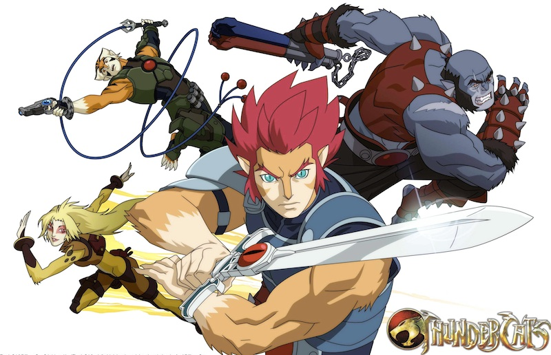
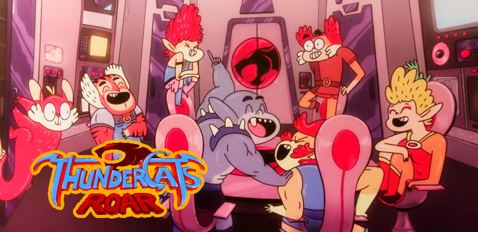
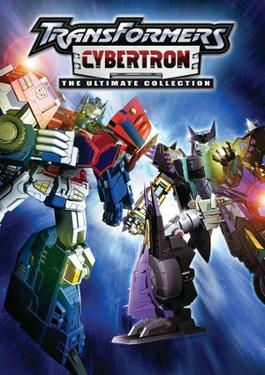
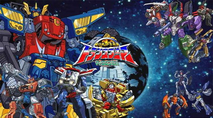
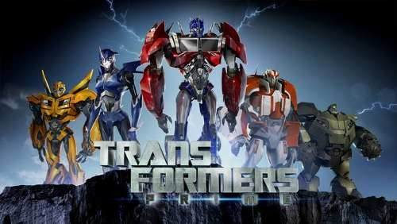
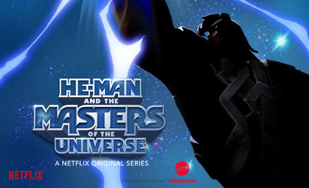

THUNDERCATS
Serie De 2011
 Thundercats (2011) es un reboot de la serie animada de televisión de Estados Unidos de la década de los ochenta, Thundercats, producida por Sam Register, Ethan Spaulding y Michael Jelenic. Fue un reinicio de la serie original de Tobin "Ted" Wolf, producida por Warner Bros Animation, con la animación proporcionada por el estudio de animación japonés 4 °C. La serie comenzó con el estreno de una hora de duración, en Cartoon Network el 29 de julio del 2011,12 y en Latinoamérica se estrenó el 30 de abril de 2012.3 El director de arte, Dan Norton confirmó la cancelación de la serie después de una temporada.45Serie De 2019
 ThunderCats Roar (en Hispanoamérica, ThunderCats Rugen) fue una serie de televisión animada estadounidense producida por Warner Bros. Animation para Cartoon Network, que se estrenó el 22 de febrero de 2020 en Estados Unidos1 y el 11 de junio de 2020 en Hispanoamérica. La trama del programa es similar a la serie original; en el que los ThunderCats escapan de su moribundo mundo natal Thundera, aterrizan en la Tercera Tierra y se enfrentan a varios villanos liderados por el malvado señor supremo, Mumm-Ra. ThunderCats Roar tiene un tono más alegre y cómico que las series anteriores. Menos de un año después de su estreno, la serie fue cancelada tras una sola temporada. Esto fue confirmado el 21 de noviembre de 2020 por Marly Halpern-Graser (escritora y productora) a través de un tuit, explicando que el episodio Mandora Saves Christmas sería el último de la serie.TRANSFORMERS
Trandformers Cybertron De 2007
Transformers: Cybertron (Transformers: Galaxy Force en Japón), es una serie de anime de Japón y Estados Unidos., animada por Gonzo y Sunwoo Entertainment. La serie es la sucesora de Transformers Energon y antecesora de la película (2007). Es la última serie perteneciente a la Trilogía de Unicron.
Transformers Armada de 2003
 Transformers Armada: La Leyenda de los Mini-Cons) es una serie de anime creada por Hidehito Ueda. Fue la primera serie que hizo en cooperación con la compañía estadounidense de juguetes Hasbro. Tiene relación con la trama de la serie original. Se estrenó el 7 de junio de 2003 en Latinoamérica. Los Autobots y los Decepticons se enfrentan en una lucha para controlar Cybertron, su planeta de origen. Captaron una señal de otro mundo revelándoles la existencia de los robots Mini-Cons, una raza olvidada de Transformers que se despertó después de siglos de hibernación en el planeta Tierra. Los Autobots y los Decepticons llegan a la Tierra, cada cual con la esperanza de descubrir primero a los legendarios Mini-Cons, ya que una alianza con estos últimos significaría nuevas y poderosas habilidades. El destino de la Tierra y del universo entero depende de quien controlará estas pequeñas máquinas.Transformers Prime
 Transformers: Prime fue una serie generada por computadora basada en la franquicia Transformers. Hizo su debut en el 29 de noviembre de 2010 por el canal The Hub en los Estados Unidos y terminó el 26 de julio de 2014. La serie comenzó, bajo el nombre de "Transformers: Prime - The Animated Series". Consta de un total de 65 episodios y tres temporadas. La segunda temporada se anunció, y fue transmitida el 28 de noviembre de 2011. Transformers Prime: Predacons Rising, la película de esta serie fue lanzada el 4 de octubre de 2013.HE-MAN
Serie De 2021
Adam, el príncipe de Eternia, descubre el poder de Grayskull y se transforma en He-Man, Amo del Universo, en esta nueva interpretación de la clásica serie animada...PROXIMAMENTE.